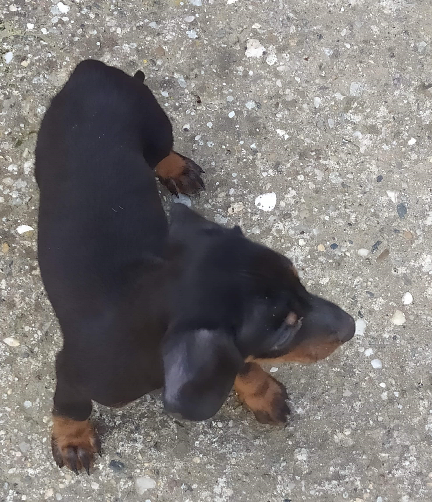

Spikey hím Németjuhász kutyus. 2015.06.25-én született Zentán, ahol Énis születtem. 2015.09.01 került hozzám. Ekkor még nagyon pici volt, azóta már megnőtt. Spikey szülei és testvérei egyaránt drogkereső kutyák, viszont Spikey nem szeretett volna drogkereső kutyus lenni, így amikor pályaválasztás elé érkezett, Ő úgy döntött, hogy a mi házikedvencünk lesz. Amikor hozzánk került, habár tudta mivel jár a karriere, nehezen élte meg a testvérei és az anyukája hiányát, kifejezetten félénk volt. A kezdeti nehézségeket leszámítva nagyon gyorsan megbarátkoztunk. Habár igyekeztünk egy szép házat szerezni neki, Ő egy nagy ketrecet válaszott magának. Kezdetben átrendezte az udvart a saját ízlésére. Minden felesleges kacatot kipakolt az udvar közepére, és értetlenkedve nézte amikor a gazdik nem értettek egyet az új dizájnal. Hamar belekezdhettünk a közös tanulásba. Én trükköket tanítottam neki mint például az ül, pacsi, fekszik, lábhoz, hozd vissza, Ő pedig rengeteg olyan dolgot tanított meg nekem, amelyet egy ember csak egy kutyustól tud megtanulni. A tanulások között rengeteget játszottunk, sétáltunk, futottunk, ettünk, macskát kergettünk, mókusokra vadásztunk, lovakra néztünk fel, fürdöttünk (ezt persze csak a természetes folyóvízben élvezni, a csapvíz az ördögtől való). Amikor valami bánatunk van, egymásnál keresünk vígaszt. Persze az örömünket is megosztjuk egymással. A haragra viszont mindkettőnkek van stresszlabdája, ami erről a képről lemaradt, ami azért furcsa, mert általában a szájában van. Habár Én vagyok az elsőszámú barátja, Anyut is mindig hazavárja a munkából a kapuban és bekíséri az ajtóig, ellenőrizve, hogy hogyan viselte az aznapi terheket. Természetesen az autóm kerekeinek az ellenőrzése sem maradhat el soha, amikor hazaérek, mivel minden egyes alkalommal körbeszaglászásra kerül. Mint mindenkinek a családban, Neki is van feladata, ám ezt nem kifejezetten szereti, mivel inkább baráti fogadtatásban részesíti az idegeneket, cserébe egy kis simogatásért, mintsem riasztaná a gazdikat. Persze egyszer reggelre vérfoltokat találtunk a kapun belül, illetve a kerítésen, de erről az esetről különösebben nem faggattuk soha. Természetesen a legnagyobb veszélyt a macskák és a mókusok jelentik, tőlük megóv minket. Rendszerint 22:00-kor a szomszéd kutyusokkal beszélget, amit nem kifejezetten szeretünk sem mi, sem a szomszédok, de hát a szociális életet is fenn kell tartani. Az udvarán kívül szinte az egész város az Övé már, viszont a nagy dolgokat mindig otthon végzi el a kis sarkában. Habár kifejezetten jól érzi magát nálunk, kétszer már megpróbált meglógni tőlünk, de hamar visszakerült. Ekkor érzékelhetően morcosabb volt vele Anyu, de Ő igekezett Anyu kedvében járni. Apuval is jól kijönnek, Ő az akivel lehet keményebben játszani, persze jelenleg a pihenésé a nagyobb hangsúly. Jelenleg 5 éves és picit fájlalja a csípőízületét, viszont a gonosz doktorbácsi már dolgozik az ügyön, hogy mihamarabb futkározhassunk.
Kis porszem Maszat 2020-ban született, és Júniusban került hozzánk. Tehát már nem is lehet azt mondani, hogy 2020-ban nem történt semmi jó. Ő szintén egy hím kutyus, ám ellentétben Spikeyval, Ő egy kistestű Rövidszőrű Tacskó. Ő egy környező faluban született, Tornyoson. Szemmel látható különbség van közte és Spikey között, viszont ugyanazt a karriert választották. Ő könnyedén túltette magát a szülein és a testvérein, lehet valami gond volt otthon. Ő az udvar hátsó részét kapta meg. Spikey-tól egy hatalmas kapu választja el, mivel Spikey nehezen fogadta be az új barátot, és félünk nehogy Maszat kárt tegyen Spikeyban. Az udvar restaurálását Ő is megkezdte, persze sokkal nehezebb dolga van mint Spikey-nak, ugyanis tenyérnyi nagyságú. Hangja még igencsak vékonyka, de kifejezi a nemtetszését. Fő elfoglaltsága a lábak alatt való rohangálás, így már nemcsak táncolás közben kell a lábunk alá néznünk. Őt a macskák hidegen hagyják, illetve a szomszédoknak sem szokott még köszönni. Ház persze neki sem kellett, Ő megkapta az egész fészert és persze a házából kibelezett szivacsokon és ruhákon tölti az estéit. Vele még nincs olyan sok élményünk mint Spikeyval, de rajta vagyunk az Ügyön. Furcsamód rengeteget tud enni, nem is értem hova fér. Mégfurcsább talán, hogy egyik reggelre a restaurálások végeztével egy gumidarabot véltünk felfedezni az udvar közepén, ami kb. 10x akkora, mint Ő maga. Nem is értjük ez hogy történhetett, de mindenesetre kicsi a bors, de erős mondás érvényesül. Kihagyhatatlan a bemutatásából az a plüssmackó akivel éjszakánként alszik. Ő jelenlegi hálócimborája, és nem is bántja, aminek mindenki örül. Hamarosan megajándékozzuk egy pórázzal és egy hámmal, hogy mihamarabb feltérképezzük a várost, így konkurálva Spikey területszerzését. Jelenleg is kint játszik az udvaron és olykor a kerítésnél szaglásszák egymást Spikeyval, néha pedig összemorognak. Viszont mindketten sejtik, hogy a másik is kutyából van és még össze is öltöztek, így remélhetőleg hamarosan nem kell fenntartani a berlini falat közöttük.